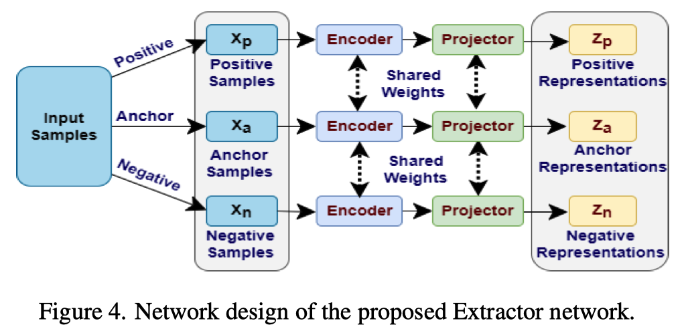

1. ERC任务定义、应用场景、关键挑战
ERC任务是情感对话系统的重要组成部分，旨在自动识别并跟踪对话期间说话者的情绪状态，可广泛用于电子医疗服务、智能客服等众多人机交互领域。其关键技术挑战包括：1）如何对conversation的基本组成单元utterance进行上下文建模；2）如何利用speaker信息；3）如何获取并利用conversation的topic信息（针对conversation中topic变化的情形）；4）如何利用其它模态的信息，如视觉/听觉模态等。
2. 常用数据集
MELD/IEMOCAP是两个常用的多模态ERC数据集，其统计信息如下所示：
| 数据集 | conversation (Train/Valid/Test) | utterance (Train/Valid/Test) |
|---|---|---|
| MELD | 1038/114/280 | 9989/1109/2610 (13708) |
| IEMOCAP | 100/20/31 | 4810/1000/1623 (7433) |
注意：不同论文列出的样本数并不相同（如ACL2021的MMGCN、CVPR2022的M2FNet、ICASSP2022的CKE-Net，需要根据数据集实际的处理情况进行更改。
conversation中utterance个数统计
| 数据集 | Max | Min | Mean |
|---|---|---|---|
| MELD | 24 | 1 | 9.62 |
| IEMOCAP |
conversation中文本模态的长度统计
| 数据集 | Max | Min | Mean |
|---|---|---|---|
| MELD | 321 | 1 | 77.33 |
| IEMOCAP |
MELD数据集：包含文本、视觉、听觉三种模态的高质量对齐数据，包含304个不同的speakers，每个conversation都包含三个及三个以上的speakers。所有的utterance都标注了七类emotion (anger, disgust, fear, joy, neutral, sadness, and surprise)和三类sentiment (neutral, positive, and negative)标签。原始数据集已包含Valid和Test。
效果排行榜：https://paperswithcode.com/sota/emotion-recognition-in-conversation-on-meld
IEMOCAP数据集：包含文本、视觉、听觉三种模态的近12小时two-way conversations数据，包含10个speakers。所有的utterance都标注了六类emotion (happy, sad, neutral, angry, excited, and frustrated)标签。原始数据集无Valid，CVPR2022的M2FNet是从Train集合中随机选取10%作为Valid。
Q1: 原始数据集没有给出conversation标签，而ERC任务又是针对对话的情绪识别，应如何理解？先前论文如何处理？A1: ERC任务的性能评价应落脚到utterances。与一般ER不同的是，ERC需要更多地考虑utterance的上下文场景。比如MMGCN训练时的输入就是batch (16) 个conversations。
3. 评价指标
- CVPR2022的M2FNet: accuracy / weighted average F1 score
- ICASSP2022的CKE-Net: weighted F1 score
- ACL2021的MMGCN: weighted accuracy / weighted average F1 score
4. 特征提取
注意：原始数据集没有提供统一的特征，不同论文的处理方式不一致。这里就存在问题，论文指标高并不一定是模型好，也可能是特征好。
- CVPR2022的M2FNet: 文本模态使用RoBERTa，视觉/听觉模态使用ResNet18，visual extractor在CASIA webface database上训练的，audio extractor是从相应音频信号获得的梅尔频谱上训练的。作者还构建了一个用于特征提取模型训练的损失函数（综合边际三元组$L_{AMT}$、协方差$L_{Cov}$和方差$L_{Var}$的损失）。表示为：$L_{FE}={\lambda_1}{L_{AMT}} + {\lambda_2}{L_{Cov}} + {\lambda_3}{L_{Var}}$
- ICASSP2022的CKE-Net: 无详细介绍。
- ACL2021的MMGCN: 文本模态采用TextCNN，视觉模态使用在FER+数据集上微调的DenseNet，听觉模态采用OpenSmile toolkit with IS10。

5. 相关工作
5.1 MMGCN (ACL2021, Multimodal Fusion via Deep Graph Convolution Network for Emotion Recognition in Conversation)
作者单位: 中国人民大学 金琴团队 论文链接
Abstract: Emotion recognition in conversation (ERC) is a crucial component in affective dialogue systems, which helps the system understand users’ emotions and generate empathetic re- sponses. However, most works focus on mod- eling speaker and contextual information pri- marily on the textual modality or simply lever- aging multimodal information through fea- ture concatenation. In order to explore a more effective way of utilizing both multi- modal and long-distance contextual informa- tion, we propose a new model based on mul- timodal fused graph convolutional network, MMGCN, in this work. MMGCN can not only make use of multimodal dependencies effec- tively, but also leverage speaker information to model inter-speaker and intra-speaker de- pendency. We evaluate our proposed model on two public benchmark datasets, IEMOCAP and MELD, and the results prove the effec- tiveness of MMGCN, which outperforms other SOTA methods by a significant margin under the multimodal conversation setting.
创新点：提出一种多模态融合图卷积网络，在多模态融合的同时捕获长距离上下文信息。
图卷积公式：
$\widetilde{\mathcal{P}}=\widetilde{\mathcal{D}}^{-1/2}\widetilde{\mathcal{A}}\widetilde{\mathcal{D}}^{-1/2}={(\mathcal{D}+\mathcal{L})}^{-1/2}{(\mathcal{A}+\mathcal{L})}{(\mathcal{D}+\mathcal{L})}^{-1/2}$
$\mathcal{H}^{(l+1)}=\sigma({({(1-\alpha)\widetilde{\mathcal{P}}\mathcal{H}^{(l)} + \alpha\mathcal{H}^{(0)}})}{({(1-\beta^{l})\mathcal{L}+\beta^{(l)}\mathcal{W}^{(l)}})})$
$\beta^{(l)}=\log{(\frac{\eta}{l} + 1)}$
$\mathcal{L}$是恒等映射 (identify mapping)，是一种残差机制